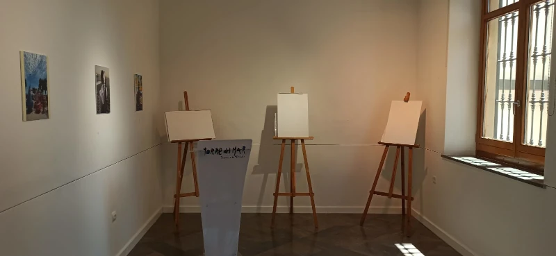
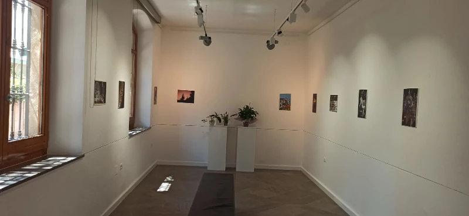
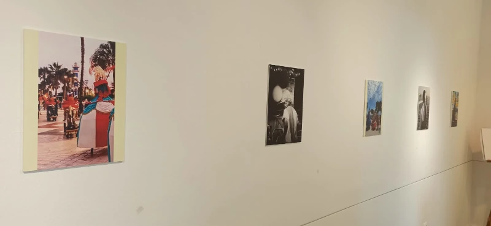
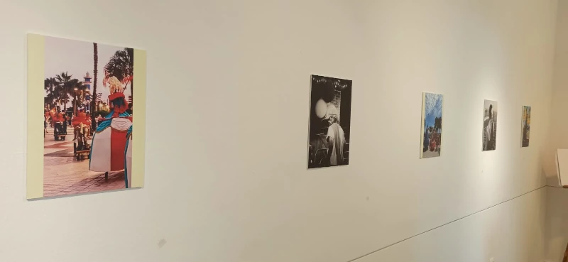
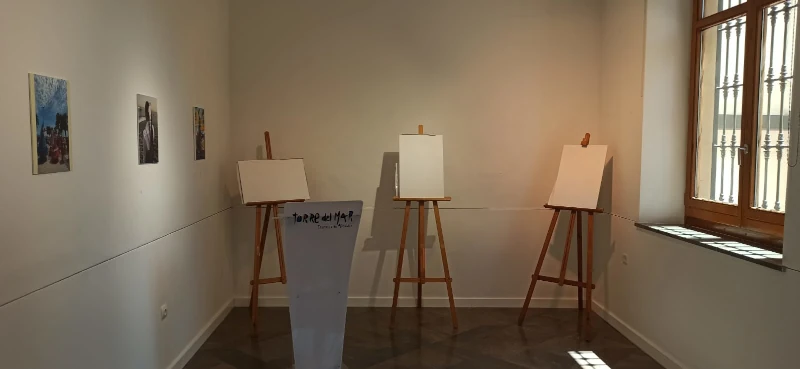
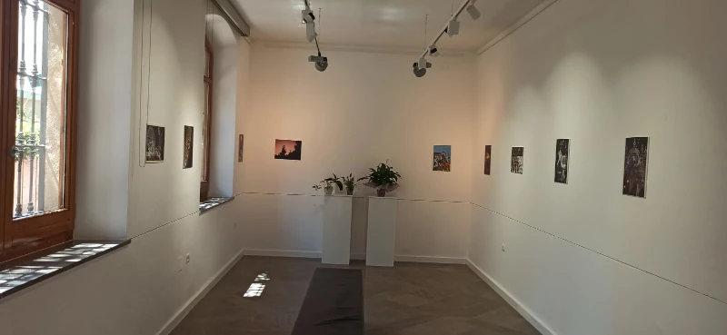
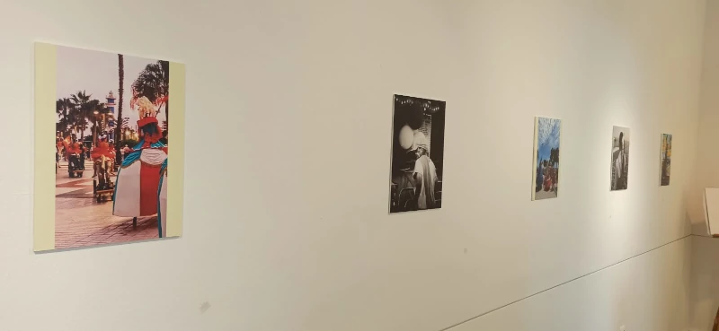

31/07/2025
Algunas imágenes antes de la presentación oficial de la entrega de premios.
  

Carta de invitación

Algunas imágenes antes de la presentación oficial de la entrega de premios.
 

Algunas imágenes antes de la presentación oficial de la entrega de premios.
Hoy 28 de julio de 2025 a las 00:00h se cierra la entrega de las fotografías del IV Concurso de Fotografía de Santiago y Santa Ana.
En breve se publicarán los ganadores del concurso. Gracias a todos/as por participar y por hacer de este concurso un éxito.
Se informa que desde las 00:00 del día 20 de julio han quedado cerradas las inscripciones al concurso de fotografía.
Suerte a todos/as y que disfrutéis haciendo fotografías.